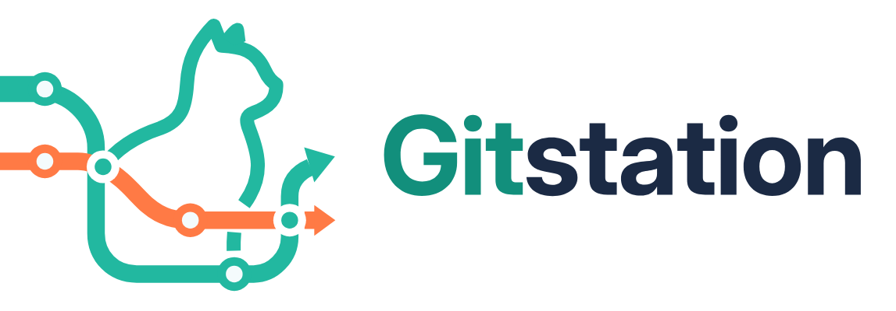

GitStation（社内 Git 基盤）・Kanflow（社内 PM ツール）・エージェントモデル（Claude Code の設定）
複数人のバイブコーディングで、速く、壊れにくく開発するための仕組み
2026-10-31 時点 ／ 出典: GitStation docs/plan/01〜07、ADR、引き継ぎメモ
社内で閉じた（オンプレの）環境で、複数の開発者と複数の AI セッションが同時に、PBI から本番デプロイまでを速く、安全に進められるようにする。
| 柱 | 完成形でできること |
|---|---|
| 計画から実装まで | Claude Code が Kanflow の PBI・受入基準を読み、タスクに分け、作業を宣言し、並行して実装する |
| 実装からマージまで | GitStation に PBI 番号付きのブランチを push → パイプライン → MR → マージキュー → 条件付きの自動マージ |
| マージから本番まで | 人の承認で社内サーバーに本番デプロイ → Kanflow のリリースとリリースノートに反映 |
| 品質と安全 | エラーの契約、権限の一点の判断、独立レビュー、危険の検査（個人情報の流出や DB の破壊は自動マージしない） |
| 学習と再発防止 | 失敗と直し方を Kanflow にチームで集め、再発したら仕組み（ゲート・テスト・規則）に変える |
| 部品 | 役割 | 技術 |
|---|---|---|
| GitStation | Git の置き場所、MR、CI/CD、自動マージ、デプロイ、仕様書の版の管理 | Rust（axum・tokio・sqlx）、PostgreSQL |
| Kanflow | PBI・スプリント・タスク、MCP、作業の宣言、フィードバックの輪、リリース | Next.js、Prisma、MariaDB |
| エージェントモデル | Claude Code のエージェント・スキル・フック・規則。開発のやり方を決める | Node.js のフック、Markdown |
| ローカル LLM | 仕様との照合、要約、下書き。外にデータを出さない | Qwen（社内のサーバー） |
| 方式 | 動き | 人の関与 |
|---|---|---|
| off | 自動マージしない | 毎回 |
| reserve（既定） | 人が「承認してマージを予約」すると、CI が緑になった時点でマージ | 予約の 1 回 |
| conditional | 共通の条件 + AI の仕様照合の承認で自動。認証・DB のマイグレーションなど保護するパスは人を待つ | 保護するパスだけ |
| full | 共通の条件 + AI の承認で、パスの例外なく自動 | なし |
共通の条件: マージキューで、先に並ぶ MR を含めたマージ結果のパイプラインが緑。必須チェックがすべて緑。個人情報・機密の流出や DB の破壊の危険（stop）は、どの方式でも止めて人の承認を待つ。マージするのは GitStation の「自動マージ」の主体で、AI のトークン自身にはマージの権限を与えない。
取り合いと衝突を、段階を分けて防ぐ。
| モデル | 使う場面 | 状態 |
|---|---|---|
| 旧 Agent_Claudecode | いまの開発（GitStation と Kanflow の連携ができるまで） | 現役。不具合の修正だけ |
| TMUX 版 | 大きな機能・複数の PBI を、複数のセッションで並行して速く進める（リーダー 1 + 作業者 n、作業者ごとに worktree） | 準備中。全体ができたら切り替え |
| Ver2 | 1 つの PBI・小さな修正を、1 つのセッションで少ないコンテキストで進める | 準備中。全体ができたら切り替え |
| GitStation_Agent | GitStation 自体の開発 | 現役 |
TMUX 版と Ver2 は、共通の部分（Kanflow 連携、作業の宣言、レビューの回し方、git の規則、フック）を1 つのプラグイン ymma-dev-coreから取り込み、違いは「並行か単独か」だけにする。版は semver、配布は beta → stable の 2 段。共通部分と食い違うと、各モデルのゲートが赤になる。
| 層 | 仕組み | 状態 |
|---|---|---|
| エラーの契約 | すべての失敗に番号 FG-<領域>-<番号>（原因・診断・直し方・手順書・テスト）。ログには request_id と error_code。利用者には user_message と request_id だけ | GitStation で稼働 |
| 権限 | 判断は forge_auth::authorize() の 1 か所。すべてのルートと git の操作が許可・拒否の両方の行を持つ表に載る。証明（Authorized）がないとハンドラに届かない | GitStation で稼働 |
| 失敗の握りつぶしの禁止 | Result を捨てない、unwrap / panic を本番の経路に置かない、外部の呼び出しには必ずタイムアウト | 規則とレビュー |
| 存在の漏れの防止 | 無いパス・削除済み・見えないパスは同じ応答。DB の問い合わせも同じ形 | phase 8 で実装 |
| 独立レビュー | 作った AI と評価する AI を分ける。言語・セキュリティ・DB・権限・git の評価役。見逃しは eval にする | 運用中 |
| ゲート（機械の検査） | fmt・clippy・テスト・エラーの目録・権限の表・生成物・i18n を AI のレビューより先に | 一部。CI は W2 |
| マージの安全 | マージキュー、危険の検査（stop）、本番は人の承認、main が壊れたら原因の特定と revert の下書き | M4 |
| 段 | 内容 | 状態（2026-10-31） |
|---|---|---|
| M1 | Git の置き場所の土台 | 約 70%。DB・エラー・権限・トークン・監査（D1〜D4）、phase 8 の MR1〜MR3（URL の解析・権限の証明・パスの引き当て）を統合。MR4（Web の振り分け）はレビュー済み・修正待ち。残り: MR5、phase 8b、D5、phase 9（clone / push）、phase 10 |
| M2 | 画面（React + TypeScript）、ロゴとアイコンは docs/brand のファイルを使う | 未着手 |
| M3 | Kanflow との連携の土台（連携の履歴とカーソル、サービスアカウント、GitStationSource） | 未着手 |
| M4 | CI/CD、マージキュー、自動マージ、デプロイ、危険の検査 | 未着手 |
| M5 | ローカル LLM の連携（仕様の照合、要約、衝突の解消案） | 未着手 |
| M6〜M8 | 知識（Wiki）、仕様書の版の管理（技術者以外にも）、運用の強化 | 未着手 |
全体（M1〜M8）では約 12%。コードは Rust 約 5.7 万行（うちテスト約 52%）、テスト 868 件。
| 段 | 内容 | 状態 |
|---|---|---|
| 第 0 段 | MCP（25 の道具）、書き込みの API、K1 PBI 番号の検出、K2/K3 取りこぼしの修正と再同期、K4 取り込み元の層（DevSource）、K5 dev:write（作業の宣言・進捗・MR のリンク） | 約 65%。統合済み（テスト 8413 件） |
| 第 0 段の残り | 受入基準の ID、PBI の機密の印、触る範囲の宣言、ボードの「作業中」、/pbi からの宣言の自動化、流れの数値 | これから |
| 第 1 段以降 | GitStation から読む（M3）、完了の候補・リリースの更新・カレンダー（M4） | GitStation の後 |
Kanflow は製品としてはほぼ完成（TypeScript 約 22 万行）。MariaDB での DB テストと E2E は、CI（W2）で必ず流すようにする。
| W | 内容 | 完了の条件 |
|---|---|---|
| W1 | 共通部分をプラグイン ymma-dev-core に | TMUX 版と Ver2 が取り込み、Kanflow 連携の変更が 1 回で両方に届く。食い違いのゲートが CI で動く |
| W2 | CI でテストを回す | どの PR も CI が緑でないとマージできない。未検証の統合が 0 |
| W3 | 作業中の表示と宣言の自動化 | 2 人 + 2 つの AI が同じスプリントで、取り合い 0 件、全員の作業が見える |
| W4 | 触る範囲の宣言 | 衝突による手戻りが MR 10 件あたり 1 件以下 |
| W5 | 受入基準の ID とテスト | AI が残りの AC を判断でき、PO の完了の確定に要る情報が MR に揃う |
| W6 | 引き継ぎの自動化 | 新しいセッションが最初の 1 分で再開の場所を言える |
| W7 | レビューの費用 | 1 MR あたりの AI レビューが 2〜3 回、マージ後の欠陥が増えない |
| W8 | 1 本の流れ | 人の判断が 4 か所だけで PBI が本番に届く |
| W9 | イベント | MR・パイプラインの変化が数秒で Kanflow に出る |
| W10 | ローカル LLM | 定型の文章で Claude のクレジットを使わない |
| W11 | フィードバックの輪 | 別プロジェクトの教訓で直った例がある。3 回を超えた失敗がすべて PBI になる |
| 指標 | 目標 |
|---|---|
| PBI の着手から MR まで | 測定を始め、中央値を半分に |
| 並行作業の衝突による手戻り | MR 10 件あたり 1 件以下 |
| 同じエラーの再発（プロジェクトをまたいで） | 確認済みの教訓がある失敗で 0 件 |
| マージ後に見つかった欠陥 | 0 を目標（見つかったら eval に足す） |
| main が赤い時間 | 0（マージキュー） |
| 未検証のまま統合した変更 | 0（CI） |
| 1 MR あたりの AI レビューの回数 | 2〜3 回 |
| 新しい開発者が最初の MR を出すまで | 1 日以内 |